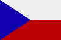

|
Länderinformationen Tschechien
1. Das Wichtigste auf einen Blick2. Sehens- und Hörenswertes
3. Politik & Gesellschaft
4. Schmeckenswertes
5. Medien
6. Reisetipps
1. Wissenswertes
|  | Hier
haben wir die wichtigsten Zahlen und Fakten zur Tschechischen
Republik und der tschechischen Sprache zusammengetragen. |
 Die tschechische Sprache
Die tschechische Sprache
Tschechisch gehört zu den slawischen Sprachen. Die slawischen Sprachen werden unterteilt in die ostslawische (Russisch, Weißrussisch und Ukrainisch), in die südslawische (Bulgarisch, Mazedonisch, Slowenisch und Serbokroatisch) und in die westslawische Sprachfamilie. Zu dieser letztgenannten gehört neben Slowakisch und Polnisch auch die tschechische Sprache, die Sie gerade mit Hilfe dieses Sprachkurses erlernen.
All diese Sprachen haben ihren Ursprung im Urslawischen, das – mit höchster Wahrscheinlichkeit – noch bis in die ersten Jahrhunderte unserer Zeitrechnung gesprochen wurde und das sich vor etwa 5000 Jahren als eigener Zweig aus dem Indogermanischen herausbildete.
In der tschechischen Sprache wird das lateinische Alphabet verwendet – im Gegensatz zu einer Reihe anderer slawischer Sprachen, die mit kyrillischen Buchstaben geschrieben werden, wie beispielsweise Russisch und Ukrainisch.
Auf die Frage „Mluvíte česky – Sprechen Sie tschechisch?“ werden Ihnen rund 12 Millionen Menschen mit „Ano! - Ja!“ antworten.
Die tschechische Sprache, čeština genannt, wird heute von rund 10 Millionen Menschen in der Republik Tschechien als Muttersprache gesprochen. Hinzu kommen einige hunderttausend Menschen, die infolge politischer Entwicklungen emigrierten. Nach dem Zweiten Weltkrieg und der eingehenden Sowjetbindung, insbesondere aber nach dem Einmarsch von Truppen des Warschauer Paktes im Jahr 1968 verließen zahlreiche Tschechen das Land und suchten eine neue Heimat in den USA, in Kanada, aber auch in Deutschland und Österreich, sowie in einer Vielzahl anderer Länder. Seit der tschechischen Mitgliedschaft in der Europäischen Union fielen zahlreiche Reisebeschränkungen und erneut verließen zahlreiche Tschechen das Land, um im Ausland zu leben, zu arbeiten oder zu studieren. Derzeit sprechen weltweit etwa zwei Millionen Menschen, die nicht in der Tschechischen Republik leben, Tschechisch als Muttersprache.
Seit dem 1.Mai 2004 (dem Beginn der tschechischen EU-Mitgliedschaft) ist Tschechisch übrigens eine der offiziellen Amtssprachen der Europäischen Union.
Nun aber zur Tschechischen Republik. Sie finden im folgenden Abschnitt interessante Fakten zu Tschechien und landestypische Informationen.
Hoch-und Umgangssprache
Neben der tschechischen Hochsprache, die bei offiziellen Anlässen, im
Radio und Fernsehen, an Schulen und Universitäten und in der
Literatur verwendet wird, existiert im Tschechischen eine Vielzahl an
Dialekten. Die Umgangssprache im Tschechischen (obecná
čeština) hebt sich dabei oftmals von der
Schriftsprache (spisovná čeština) ab und
hat veränderte grammatikalische Feinheiten und eigene Nuancen in
der Aussprache.
 Einwohner
Einwohner
In der Tschechischen Republik leben knapp 10,3 Millionen Einwohner und ist damit in etwa so bevölkerungsreich wie Baden-Württemberg. An Minderheiten lassen sich in Tschechien vor allem Slowaken, Ungarn, Roma, Polen und Ungarn finden.
Das Durchschnittsalter der tschechischen Bevölkerung liegt bei rund 39 Jahren und ist damit rund 3 Jahre geringer als in Österreich oder Deutschland.
Die durchschnittliche Lebenserwartung liegt bei rund 73 Jahren (Männer) und 79 Jahren (Frauen).
 Fläche
Fläche
Das Staatsgebiet Tschechiens umfasst eine Fläche von rund 79.000 km² und ist damit flächenmäßig annähernd so groß wie Österreich.
 Währung
Währung
In Tschechien wird mit der Tschechischen Krone (Koruna česká, Abk.: Kč) gezahlt. Diese ist wiederum unterteilt in 100 Heller (haléř). Die Einführung der EU-Gemeinschaftswährung Euro in Tschechien ist für das Jahr 2010 anvisiert.
Einen aktuellen Wechselkurs von Krone zu Euro können wir Ihnen an dieser Stelle freilich nicht bieten, dieser lässt sich jedoch im Internet mit wenig Aufwand bequem finden (geben Sie einfach bei einer Suchmaschine den Begriff „Währungsrechner“ ein) oder auch bei Ihrer Bank erfragen.
 Ökonomische Situation
Ökonomische Situation
Im direkten Vergleich mit Deutschland, Österreich oder der Schweiz verfügt Tschechien über einen deutlich geringeren Lebensstandart, wenngleich die tschechische Wirtschaft seit dem Fall des Eisernen Vorhangs sehr hohe Wachstumsraten erlebt. Von einem armen Land kann jedoch freilich nicht gesprochen werden, vor allem die Region um Prag ist relativ wohlhabend.
Hauptexportgüter des Landes sind moderne Industrieprodukte (vor allem Kraftfahrzeuge, technische, pharmazeutische und chemische Produkte), Glasprodukte und Lebensmittel.
Den größten Anteil der Beschäftigung nimmt in Tschechien der Dienstleistungssektor mit mehr als der Hälfte der Erwerbstätigen ein, während in der Landwirtschaft lediglich rund 4% beschäftigt sind.
 Zeitzone
Zeitzone
Tschechien liegt in der selben Zeitzone wie Österreich, Deutschland und die Schweiz. Das bedeutet, dass sowohl bei Ihnen zu Hause als auch in Prag die selbe Uhrzeit ist.
In Tschechien wird übrigens zur Sommerzeit die Uhr ebenfalls um eine Stunde vorgestellt.
Im nächsten Kapitel haben wir einige ausgesuchte Reiseempfehlungen zusammen gestellt.